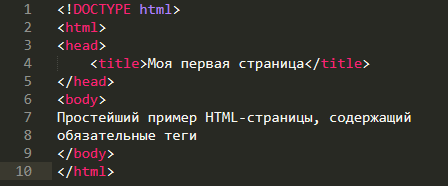

Обязательные тэги. Зачем телу голова, а голове тело?

В нем используются все обязательные теги языка Html
< HTML> и < /HTML> - данный тег определяет начало и конец Html- документа
< HEAD > и < /HEAD> – определяют начало и конец заголовка документа. В заголовок документа обычно включается наименование документа и множество дополнительной служебной информации.
< TITLE> и < /TITLE> – теги для определения наименования документа. Текст, помещенный между ними, воспринимается браузером как название документа и отображается им в заголовке окна.
< BODY> и < /BODY> – теги для определения тела HTML-документа. Тело документа отвечает и за информационное содержание и за внешний вид информации, представленной в окне браузера.
Tег < BODY > может содержать несколько необязательных атрибутов:
BGCOLOR – определяет цвет фона. Цвет может быть именованным (“RED”, “BLUE”, “GREEN” и др.) или определяться в виде кода RGB (“#FF0000”, “#00FF50”).
BGCOLOR – определяет цвет фона. Цвет может быть именованным (“RED”, “BLUE”, “GREEN” и др.) или определяться в виде кода RGB (“#FF0000”, “#00FF50”).
BACKGROUND – позволяет задать фон HTML-страницы в виде графического изображения (рисунка). Если рисунок меньше окна браузера, то он многократно дублируется, заполняя все окно.
TEXT – определяет цвет текста HTML-страницы.
LINK – цвет гипертекстовой связи (ссылки).
VLINK – цвет уже посещенной ссылки.
ALINK – цвет активной ссылки. Активной является ссылка, к которой подводится указатель мыши.